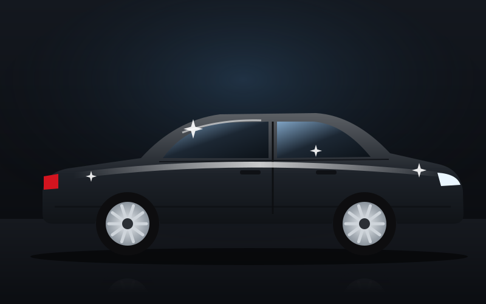
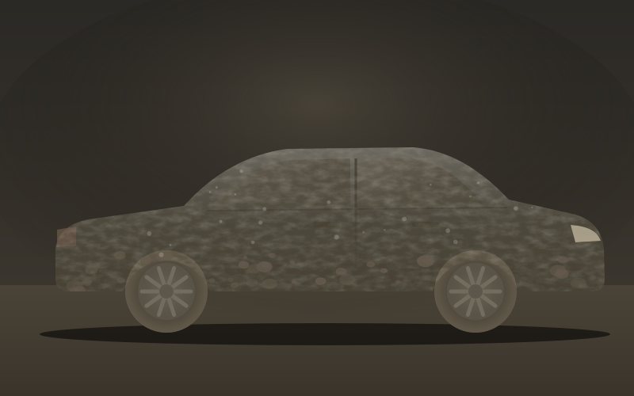

⟷
Vitrificação de pintura
Camada cerâmica de alta dureza que protege a pintura por até 3 anos contra sol, chuva ácida, resina e riscos leves, com brilho profundo e efeito repelente à água.
- Lavagem técnica e descontaminação
- Polimento de correção
- Aplicação de coating cerâmico 9H
- Garantia de até 3 anos